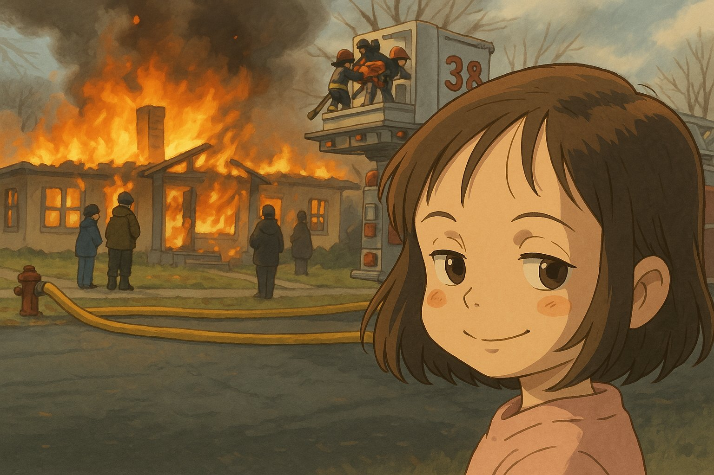
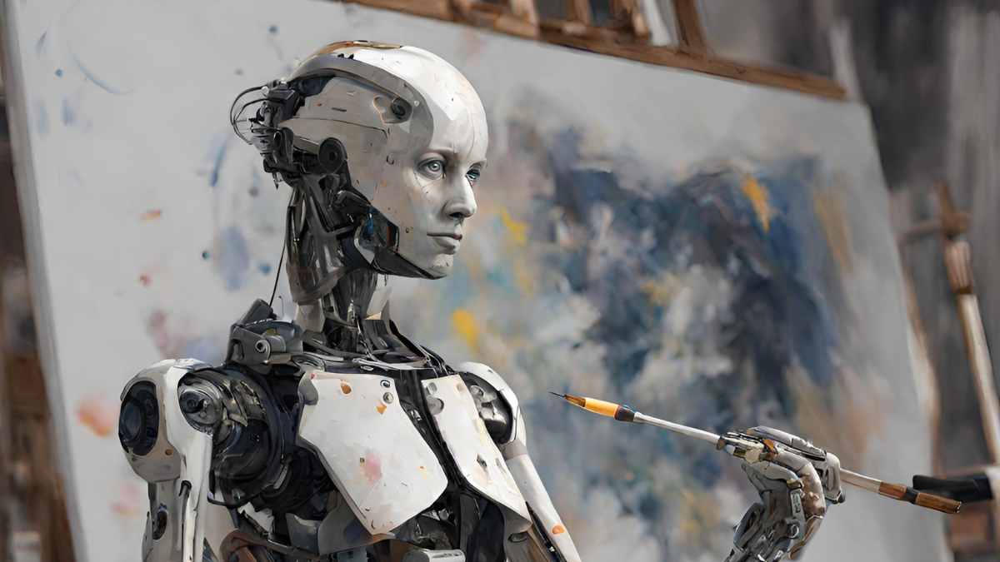
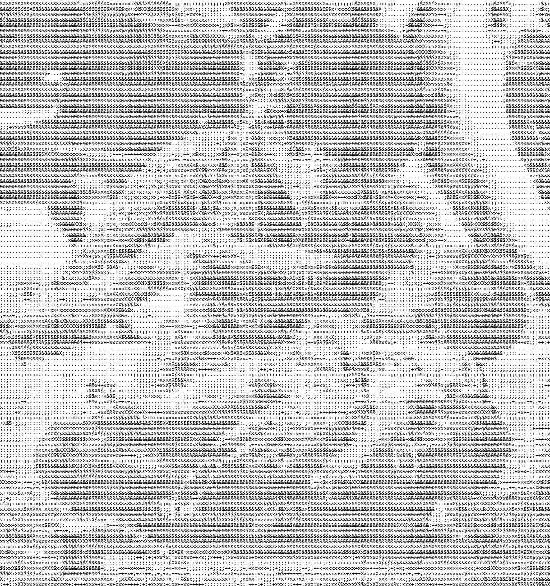

Estudio Ghibli y el robo digital
Instagram se inundó recientemente con imágenes generadas por IA al estilo del Estudio Ghibli. Lo inquietante: estas imágenes no son homenajes, son robos. Roban estilo, esencia y horas de trabajo de artistas reales. Y lo hacen sin conciencia alguna, alimentadas por datos arrancados de internet sin consentimiento.
La ironía es brutal: una tecnología insaciable que devora recursos naturales se utiliza para imitar un estudio cuyo mensaje central es proteger la naturaleza.



El verdadero Ghibli
Las películas de Studio Ghibli nos hablan de naturaleza, infancia y feminismo. La naturaleza no es solo fondo, es protagonista. En Nausicaä o La princesa Mononoke, vemos una lucha directa: progreso contra vida. Un mensaje claro: proteger lo que aún nos queda.
La infancia es vista como un último refugio de inocencia. Espíritus invisibles para adultos, críticas a la codicia, y la educación como reflejo de la desigualdad.
Y el feminismo no es un accesorio: es la médula. Mujeres protagonistas, fuertes, valientes, que crecen, se enfrentan al mundo y lo transforman. No hay villanos simples, lo que se combate es el egoísmo humano, la guerra, la destrucción.
¿Qué hace la IA con esto? Lo pervierte. Lo convierte en contenido para "likes", lo hipersexualiza, lo vacía. Y todo por seguir una moda que además contamina miles de litros de agua.
¿Cómo afecta esto a los artistas?
La IA se presenta como herramienta, pero se usa como sustituto. Imágenes generadas sin alma, sin esfuerzo, sin historia, que se alimentan del robo. Y los que lucran con esto se justifican: "todos los artistas se inspiran en otros".
Inspirarse no es robar. La diferencia está en el mérito, el proceso, el tiempo invertido. Si dejamos que nos reemplacen, también enterramos el valor del esfuerzo humano.
La IA no crea. Imita. Y en un sistema capitalista que solo busca ahorrar, eso basta. Aunque el resultado sea mediocre. Aunque sea desechable.
Impacto ambiental de la IA
Una sola IA como ChatGPT puede consumir más de 280.000 litros de agua en su entrenamiento. Puede contaminar tanto como cinco coches durante todo su ciclo de vida. Puede emitir más CO₂ que 125 vuelos entre Nueva York y Pekín.
La IA consume electricidad en centros de datos gigantes que requieren una refrigeración intensiva. Su huella hídrica y de carbono es un secreto a voces, porque las grandes empresas no están obligadas a rendir cuentas.
- Centros de datos: 40% más energía por la refrigeración
- Una sola sesión de entrenamiento equivale al consumo anual de 126 hogares
- La basura electrónica es el final inevitable
¿Cómo evitar caer en la trampa?
- Limita tu consumo de IA: usa apps como Freedom o Cold Turkey
- Desarrolla pensamiento crítico y creativo
- Confía en tus habilidades humanas: empatía, arte, razonamiento
- Detecta el contenido falso: sé consciente del entorno digital
En el sistema educativo:
- Supervisión activa por docentes
- Fomento del pensamiento crítico
- Control parental y regulación de contenidos
- Protección de datos de estudiantes
- Evaluación del impacto real de la tecnología
Y en el entorno general: exige transparencia, apoya artistas humanos, no normalices lo artificial como norma.
Obra humana vs obra artificial
¿Qué hacemos cuando estudiamos algo que nos puede sustituir? ¿Qué haremos cuando las máquinas hagan nuestro trabajo, y el sistema nos exija seguir produciendo?
Con este trabajo quiero provocar una reflexión real: estamos entregando el mundo a la deshumanización. La IA en la guerra ya está aquí: drones autónomos que asesinan sin intervención humana, propaganda fabricada, manipulación emocional.
Nos estamos acostumbrando a ver el horror como si fuera una serie. Lo vemos todo filtrado, distorsionado, editado. Y quienes no tienen acceso a estas tecnologías se vuelven más vulnerables.
El conflicto palestino actual es la prueba de cómo la tecnología puede amplificar la violencia y silenciar la verdad.
